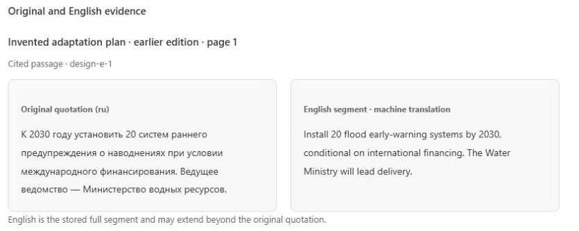

Policy Tracker evidence
The evidence panel shows the original quotation, its English translation, and the page it came from. The screenshot uses an invented adaptation plan.

Read-only snapshot
The snapshot shows six documents across three countries. The source repository describes a larger inventory of 42 PDFs and 18 country entries. Run history includes failed and cancelled jobs from development.